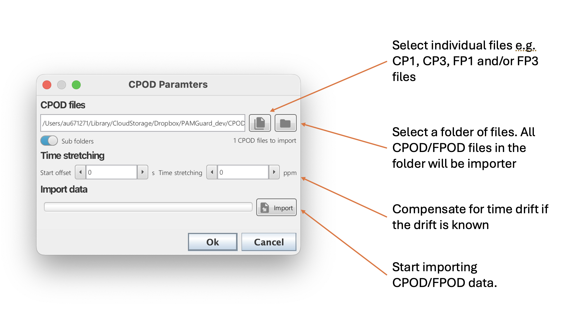
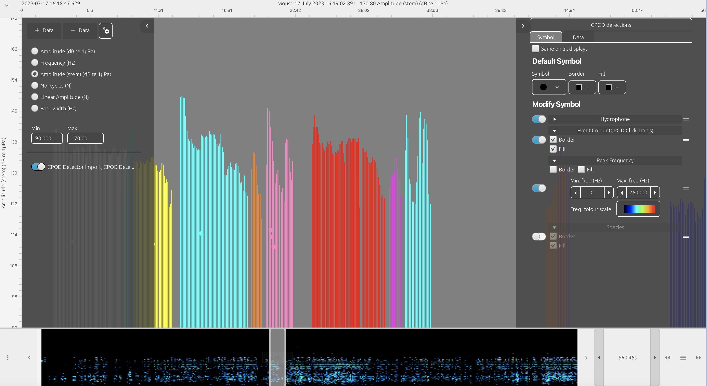
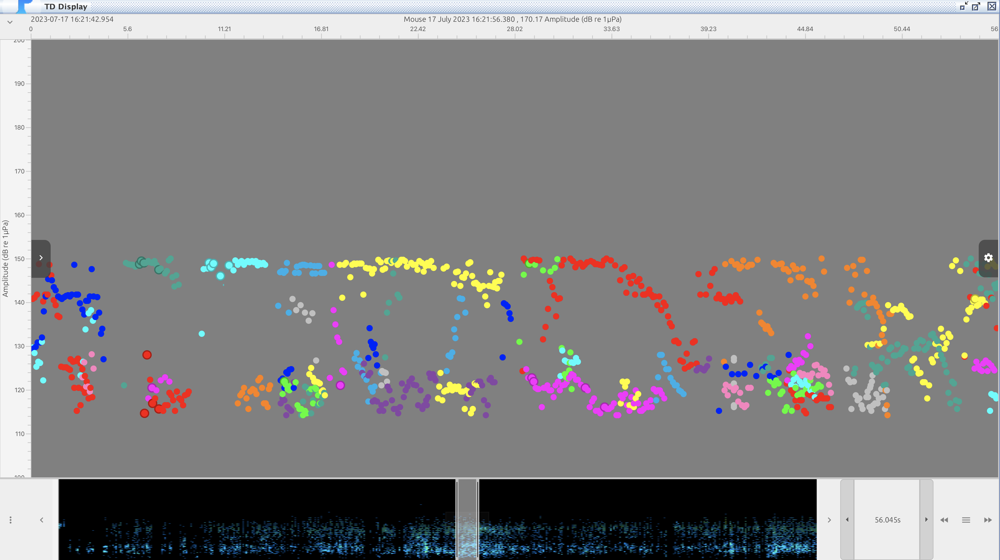
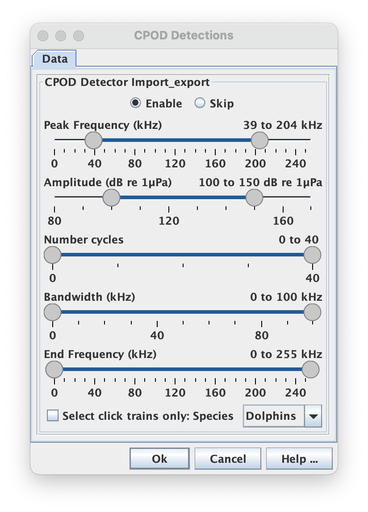
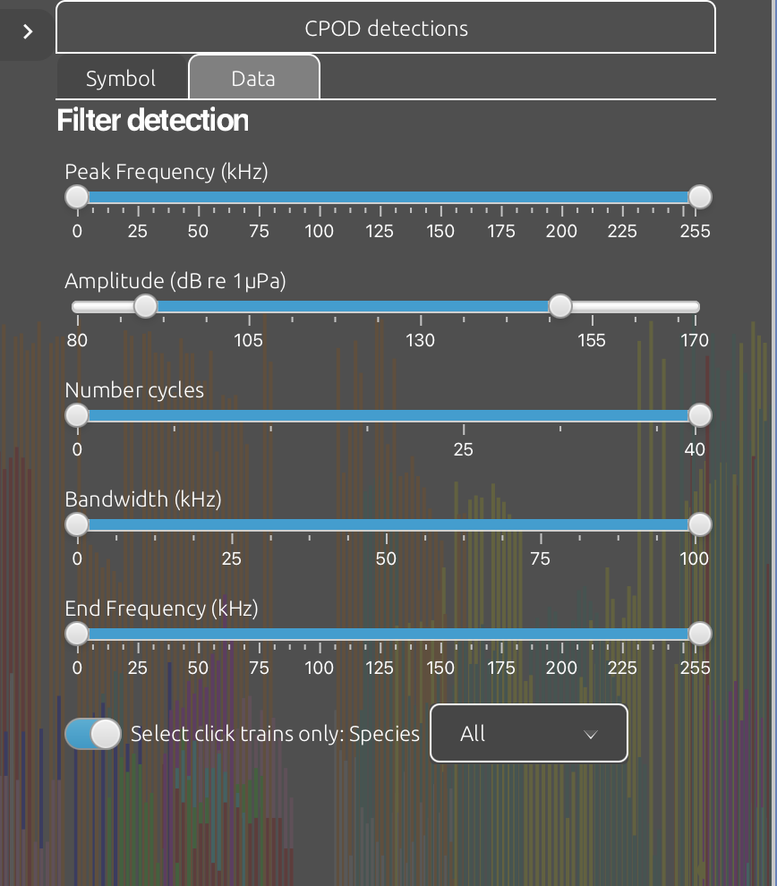
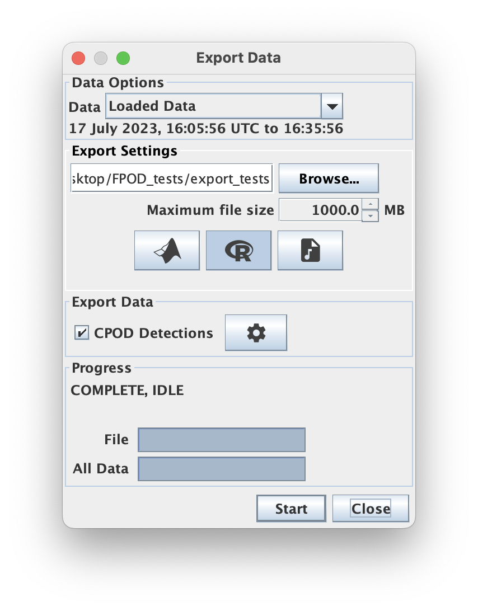

CPODs and FPODs are click data loggers widely used in research and industry developed by Chelonia Ltd. PAMGuard's CPOD module allows users to import CPOD and FPOD data into PAMGuard so it can be viewed using PAMGuard's visualisation tools. A common use case for this module is to display both CPOD/FPOD data and a lower frequency recording device together - for example a typical PAM setup is to use a CPOD to record high frequency echolocation clicks then a lower frequency recorder (e.g. 96 kHz sample rate) to record dolphin whistles, noise, fish sounds etc.
CPODs and FPODs do not record raw audio - they run a simple on board click detector and then save some basic metrics on each detected click e.g. peak frequency, bandwidth, end frequency etc. FPODs, the successor of CPODs, also record a little extra waveform data on a small subset of detected clicks. Once a CPOD or FPOD has been recovered, it is processed using CPOD.exe or FPOD.exe software respectively which runs a click train classifier. The click train classifier extracts sequences of successive clicks that are likely from the same source, e.g a dolphin, porpoise or echo sounder. It then assigns a likely species to a click train or classes it as unknown. The outputs from the click train detector are saved to a CP3 file which is essentially a file that contains only clicks that have been assigned to click trains.
To add the CPOD module go to File->Add Modules->Sensors->CPOD. The module requires the binary storage module in PAMGuard File-> Add modules->Utilities->Binary File. Once both the CPOD and Binary file storage modules have been added open the CPOD settings using Settings->CPOD importer.
The module has three possible modes of importing data
Users can use the file button to select a single file (e.g. an FP3 file) or the folder button to select a folder of CPOD/FPOD files. If the folder button is used and there are both CP1/FP1 (detections) and CP3/FP3 (click trains) files then PAMGuard will automatically load all files and assign detections to click trains. Once files have imported select Import and the data will be imported into PAMGuard - note this can take some time, especially if importing CP1/FP1 files.

The CPOD module allow users to import CPOD/FPOD data by selecting either individual files or a folder of files
A broad overview of CPOD data is shown in PAMGuard's data map which shows a datagram similar to the click detector. The datagram shows the frequency density of CPOD/FPOD clicks constructed from the peak frequency parameter for each click The datagram can be useful for quickly navigating to sections of data that may contain porpoises and/or dolphins.
Individual CPOD detections can be viewed in the Time base display in PAMGuard. Add the CPOD module to a plot and then data can be viewed with time using a selection y-axis options such as Amplitude, Amplitude (stem), Frequency, bandwidth etc.


FPOD data visualised in the time base display as a stem plots like FPOD.exe (top) and as a scatter plot of click amplitudes (bottom)
The CPOD module has a custom data selector which provides a unified interface for users to select subsets of CPOD/FPOD data. The data selector has sliders which set the range of various parameters, such as peak frequency and also allows the selection of CPOD/FPOD which belong to a click and those gave been classified to a particular species. Users can use the data selector to, for example, only export clicks classified as dolphin or perhaps plot only clicks with a peak frequency between 100 and 150 kHz on the time display.
| CPOD data selector | CPOD data selector in time display |
|---|---|
|  |  |
Screenshots of the data selector user interface used throughout PAMGuard. Although the style can change, the data selector is the same throughout PAMGuard
CPOD and FPOD data can be exported to .RData and .mat using PAMGuard's exporter.

PAMGuard's exporter can export CPOD/FPOD clicks to .mat or .RData files. These can be opened in MATLAB, Python, and R respectively
The fields saved by the exporter are the same as a standard PAMGuard detection (see exporter help). The additional fields for CPODs and FPODs are